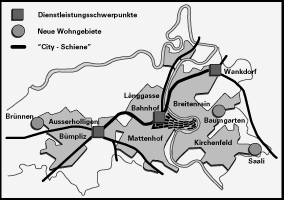
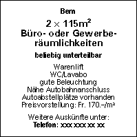

| Arbeitsraum | ||
| Kleine
Dienstleistungsfirmen, die auf eine hohe Zentralität
angewiesen sind, finden in der Innenstadt immer wieder
passende Raumangebote. |
||
| Insbesondere für grössere Dienstleistungsnutzer und -nutzerinnen wurden in enger Zusammenarbeit mit den kant. Behörden und den Transportunternehmungen die drei Entwicklungsschwerpunkte (ESP's) „Bern-Ausserholligen“, „Masterplangebiet Bahnhof Bern“ und „Bern-Wankdorf“ definiert. Alle drei Gebiete verfügen dank optimaler Erschliessung mit öffentlichen Verkehrsmitteln über eine hohe Zentralität. In den planerisch weit fortgeschrittenen Gebieten „Masterplan Bahnhof Bern“ und „Bern-Ausserholligen“ können Investoren binnen kurzer Frist ihre baulichen Vorhaben realisieren. | ||
 |
||
| Gewerbliche und industrielle Nutzer finden geeignete Raumangebote und Investitionsmöglichkeiten am Siedlungsrand, in der Nähe von Autobahnanschlüssen. | ||
 |
||
| Täglich finden Sie in allen grossen Berner Tageszeitungen aktuelle Inserate für Gewerberäumlichkeiten. | ||